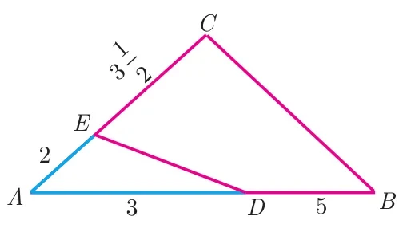
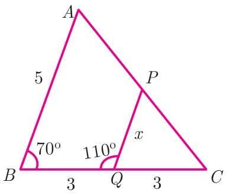
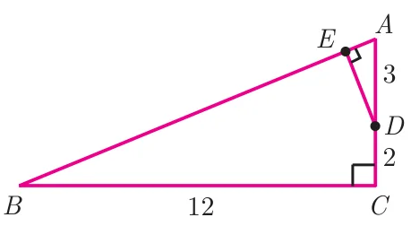
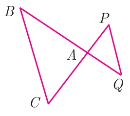
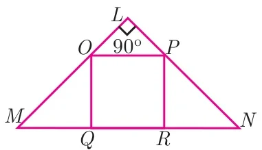
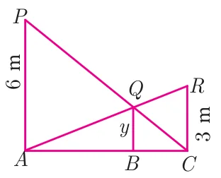

Exercise 4.1
- Check whether the which triangles are similar and find the value of \(x\).

(i) 
(ii) - A girl looks the reflection of the top of the lamp post on the mirror which is 6.6 m away from the foot of the lamppost. The girl whose height is 1.25 m is standing 2.5 m away from the mirror. Assuming the mirror is placed on the ground facing the sky and the girl, mirror and the lamppost are in a same line, find the height of the lamp post.
- A vertical stick of length 6 m casts a shadow 400 cm long on the ground and at the same time a tower casts a shadow 28 m long. Using similarity, find the height of the tower.
- Two triangles \(QPR\) and \(QSR\), right angled at \(P\) and \(S\) respectively are drawn on the same base \(QR\) and on the same side of \(QR\). If \(PR\) and \(SQ\) intersect at \(T\), prove that \(PT \times TR = ST \times TQ\).
- In the adjacent figure, \(\Delta ABC\) is right angled at C and \(DE \perp AB\). Prove that \(\Delta ABC \sim \Delta ADE\) and hence find the lengths of \(AE\) and \(DE\).

- In the adjacent figure, \(\Delta ACB \sim \Delta APQ\). If \(BC = 8\) cm, \(PQ = 4\) cm, \(BA = 6.5\) cm and \(AP = 2.8\) cm, find \(CA\) and \(AQ\).

- If figure \(OPRQ\) is a square and \(\angle MLN = 90^\circ\). Prove that (i) \(\Delta LOP \sim \Delta QMO\) (ii) \(\Delta LOP \sim \Delta RPN\) (iii) \(\Delta QMO \sim \Delta RPN\) (iv) \(QR^2 = MQ \times RN\)

- If \(\Delta ABC \sim \Delta DEF\) such that area of \(\Delta ABC\) is \(9\text{cm}^2\) and the area of \(\Delta DEF\) is \(16\text{cm}^2\) and \(BC = 2.1\) cm. Find the length of \(EF\).
- Two vertical poles of heights 6 m and 3 m are erected above a horizontal ground \(AC\). Find the value of \(y\).

- Construct a triangle similar to a given triangle \(PQR\) with its sides equal to \(\dfrac{2}{3}\) of the corresponding sides of the triangle \(PQR\) (scale factor \(\dfrac{2}{3} < 1\)).
- Construct a triangle similar to a given triangle \(LMN\) with its sides equal to \(\dfrac{4}{5}\) of the corresponding sides of the triangle \(LMN\) (scale factor \(\dfrac{4}{5} < 1\)).
- Construct a triangle similar to a given triangle \(ABC\) with its sides equal to \(\dfrac{6}{5}\) of the corresponding sides of the triangle \(ABC\) (scale factor \(\dfrac{6}{5} > 1\)).
- Construct a triangle similar to a given triangle \(PQR\) with its sides equal to \(\dfrac{7}{3}\) of the corresponding sides of the triangle \(PQR\) (scale factor \(\dfrac{7}{3} > 1\)).